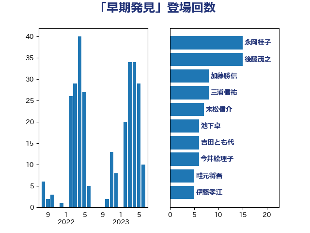

単語「早期発見」

| 永岡桂子 | 自由民主党 | 15 回 |
| 後藤茂之 | 自由民主党 | 15 回 |
| 加藤勝信 | 自由民主党 | 8 回 |
| 三浦信祐 | 公明党 | 8 回 |
| 末松信介 | 自由民主党 | 7 回 |
| 池下卓 | 日本維新の会 | 6 回 |
| 吉田とも代 | 日本維新の会 | 6 回 |
| 今井絵理子 | 自由民主党 | 6 回 |
| 畦元将吾 | 自由民主党 | 5 回 |
| 伊藤孝江 | 公明党 | 5 回 |
| 齋藤健 | 自由民主党 | 4 回 |
| 山口壯 | 自由民主党 | 4 回 |
| 鰐淵洋子 | 公明党 | 3 回 |
| 阿部知子 | 立憲民主党 | 3 回 |
| 足立康史 | 日本維新の会 | 3 回 |
| 自見はなこ | 自由民主党 | 3 回 |
| 竹内真二 | 公明党 | 3 回 |
| 塩川鉄也 | 日本共産党 | 3 回 |
| 吉田統彦 | 立憲民主党 | 3 回 |
| 高木かおり | 日本維新の会 | 2 回 |
| 青柳陽一郎 | 立憲民主党 | 2 回 |
| 金村龍那 | 日本維新の会 | 2 回 |
| 西村康稔 | 自由民主党 | 2 回 |
| 若宮健嗣 | 自由民主党 | 2 回 |
| 秋野公造 | 公明党 | 2 回 |
| 浅野哲 | 国民民主党 | 2 回 |
| 沢田良 | 日本維新の会 | 2 回 |
| 市村浩一郎 | 日本維新の会 | 2 回 |
| 川田龍平 | 立憲民主党 | 2 回 |
| 岸田文雄 | 自由民主党 | 2 回 |
| 小倉將信 | 自由民主党 | 2 回 |
| 大西健介 | 立憲民主党 | 2 回 |
| 大口善徳 | 公明党 | 2 回 |
| 塩田博昭 | 公明党 | 2 回 |
| 堀場幸子 | 日本維新の会 | 2 回 |
| 吉田はるみ | 立憲民主党 | 2 回 |
| 古川禎久 | 自由民主党 | 2 回 |
| 友納理緒 | 自由民主党 | 2 回 |
| 佐藤英道 | 公明党 | 2 回 |
| 高橋千鶴子 | 日本共産党 | 1 回 |
| 高市早苗 | 自由民主党 | 1 回 |
| 野田国義 | 立憲民主党 | 1 回 |
| 道下大樹 | 立憲民主党 | 1 回 |
| 赤池誠章 | 自由民主党 | 1 回 |
| 角田秀穂 | 公明党 | 1 回 |
| 西田実仁 | 公明党 | 1 回 |
| 西村明宏 | 自由民主党 | 1 回 |
| 西岡秀子 | 国民民主党 | 1 回 |
| 藤井一博 | 自由民主党 | 1 回 |
| 萩生田光一 | 自由民主党 | 1 回 |
| 荒井優 | 立憲民主党 | 1 回 |
| 芳賀道也 | 国民民主党 | 1 回 |
| 篠原孝 | 立憲民主党 | 1 回 |
| 稲津久 | 公明党 | 1 回 |
| 福山哲郎 | 立憲民主党 | 1 回 |
| 神谷政幸 | 自由民主党 | 1 回 |
| 田野瀬太道 | 無所属 | 1 回 |
| 生稲晃子 | 自由民主党 | 1 回 |
| 牧山ひろえ | 立憲民主党 | 1 回 |
| 片山大介 | 日本維新の会 | 1 回 |
| 浜地雅一 | 公明党 | 1 回 |
| 浜口誠 | 国民民主党 | 1 回 |
| 水岡俊一 | 立憲民主党 | 1 回 |
| 比嘉奈津美 | 自由民主党 | 1 回 |
| 梅村みずほ | 日本維新の会 | 1 回 |
| 枝野幸男 | 立憲民主党 | 1 回 |
| 東徹 | 日本維新の会 | 1 回 |
| 本村伸子 | 日本共産党 | 1 回 |
| 星北斗 | 自由民主党 | 1 回 |
| 早坂敦 | 日本維新の会 | 1 回 |
| 新垣邦男 | 立憲民主党 | 1 回 |
| 斉藤鉄夫 | 公明党 | 1 回 |
| 掘井健智 | 日本維新の会 | 1 回 |
| 平山佐知子 | 無所属 | 1 回 |
| 山田勝彦 | 立憲民主党 | 1 回 |
| 山本左近 | 自由民主党 | 1 回 |
| 山下芳生 | 日本共産党 | 1 回 |
| 小西洋之 | 立憲民主党 | 1 回 |
| 宮路拓馬 | 自由民主党 | 1 回 |
| 宮崎雅夫 | 自由民主党 | 1 回 |
| 安江伸夫 | 公明党 | 1 回 |
| 城井崇 | 立憲民主党 | 1 回 |
| 和田義明 | 自由民主党 | 1 回 |
| 古賀友一郎 | 自由民主党 | 1 回 |
| 勝目康 | 自由民主党 | 1 回 |
| 倉林明子 | 日本共産党 | 1 回 |
| 保岡宏武 | 自由民主党 | 1 回 |
| 佐々木さやか | 公明党 | 1 回 |
| 伊藤渉 | 公明党 | 1 回 |
| 伊藤孝恵 | 国民民主党 | 1 回 |
| 伊東信久 | 日本維新の会 | 1 回 |
| 三木圭恵 | 日本維新の会 | 1 回 |
| 三上えり | 立憲民主党 | 1 回 |
| こやり隆史 | 自由民主党 | 1 回 |